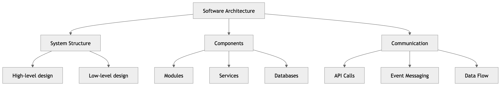

1. Дизајн на Архитектура

Архитектонскиот дизајн го дефинира начинот на кој софтверскиот систем е структурно организиран во посебни комуницирачки компоненти. Тој служи како мост помеѓу фазата на спецификација на барања и детален системски дизајн.
Агилност и Архитектура
Во агилните процеси, критично е целокупната архитектура да се постави во раната фаза. Подоцнежните обиди за рефакторирање на архитектурата се исклучително скапи бидејќи резултираат со верижни промени низ многу компоненти.
Предности на Експлицитна Архитектура
- Комуникација со засегнати страни: Архитектурата служи како фокус и заеднички јазик за дискусија од страна на сите засегнати страни (клиенти, менаџери, инженери).
- Анализа на системот: Овозможува рана евалуација на тоа дали системот е способен да ги исполни своите критични нефункционални барања.
- Голема повторна употреба: Архитектурата може да биде пренослива и повторно употреблива низ цела низа сродни системи (архитектури на производни линии).
Архитектонска Апстракција и Одлуки за Квалитет
- Архитектура во мало: Се однесува на внатрешната структура на индивидуални програми (на пример, како програмата е декомпонирана на класи).
- Архитектура во големо: Опфаќа комплексни корпоративни системи дистрибуирани на различни компјутери кои вклучуваат и други независни системи.
- Перформанси: Бара локализација на критичните операции за минимизирање на мрежната комуникација. Потребно е користење на крупни (large-grain) наместо ситнозрнести компоненти.
- Безбедност (Security): Се постигнува преку слоевита архитектура со најкритичните средства сместени во највнатрешните слоеви.
- Сигурност (Safety): Бара локализација на безбедносно-критичните карактеристики во мал и строго изолиран број подсистеми.
- Достапност: Се заснова на вклучување редундантни компоненти и напредни механизми за толеранција на грешки.
- Одржливост: Налага користење на ситнозрнести (fine-grain), строго заменливи и независни компоненти.
Инженерски конфликт (Trade-off): Забележи дека нефункционалните барања често се во конфликт. На пример, Одржливоста бара ситнозрнести компоненти, додека Перформансите бараат крупни компоненти. Дизајнот е секогаш изнаоѓање компромис!
Архитектонски Погледи (4+1 Модел)
| Поглед | Академски Опис и Фокус |
|---|---|
| Логички поглед | Ги претставува клучните апстракции во софтверот моделирани како објекти или структурирани класи. |
| Процесен поглед | Го отсликува однесувањето за време на извршување (runtime), прикажувајќи ги синхронизираните и интерактивните процеси. |
| Развоен поглед | Ја дефинира структурата на кодот, декомпозицијата на модули, библиотеките и пакетите за развојните тимови. |
| Физички поглед | Го прикажува хардверот и начинот на кој софтверските компоненти се дистрибуираат низ хардверските јазли и процесори. |
| Сценарија (+1) | Случаите на употреба (Use Cases) кои ги поврзуваат и ги валидираат преостанатите четири погледи. |
Архитектонски Шаблони
Што е архитектонски шаблон? Тоа е стилизиран опис на добра дизајнерска пракса, која е веќе испробана, тестирана и докажана во различни развојни средини. Вклучува информации кога е корисен, а кога не.
| Model-View-Controller (MVC) | |
|---|---|
| Опис & Употреба | Ја одвојува презентацијата и корисничката интеракција од податоците. Се користи кога има повеќе начини за приказ на исти податоци. |
| Прос & Конс | Предности: Независна промена на кодот на корисничкиот интерфејс без влијание на бизнис логиката. Недостатоци: Може да внесе непотребна комплексност кај поедноставни системи. |
| Слоевита Архитектура (Layered) | |
|---|---|
| Опис & Употреба | Хиерархиска поделба каде секој слој обезбедува услуги на слојот непосредно над него. Се користи за градење нови услуги над стари системи и повеќестепена безбедност. |
| Прос & Конс | Предности: Цел слој може целосно да се замени сè додека неговиот интерфејс е стабилен. Недостатоци: Намалени перформанси (overhead) поради секвенцијално поминување низ повеќе нивоа. |
| Архитектура на Складиште (Repository) | |
|---|---|
| Опис & Упопреба | Независните компоненти пристапуваат исклучиво до една централна база на податоци. Се користи при огромни количини на споделени податоци. |
| Прос & Конс | Предности: Ефикасно централизирано управување со податоци и конзистентност. Недостатоци: Централната база е единствена точка на неуспех (Single point of failure) и потенцијално тесно грло за перформансите. |
| Клиент-Сервер (Client-Server) | |
|---|---|
| Опис & Употреба | Дистрибуирани сервери нудат специфични услуги до оддалечени независни клиенти. Се користи за веб и мобилни апликации со географски разделени корисници. |
| Прос & Конс | Предности: Лесно дистрибуирање на товар на мрежата и независен развој на клиентот. Недостатоци: Силна зависност од стабилноста и пропусниот опсег на компјутерската мрежа. |
| Цевки и Филтри (Pipe and Filter) | |
|---|---|
| Опис & Употреба | Податоците течат последователно низ дискретни филтри за трансформација. Идеално применливо кај обработка во серии (batch processing). |
| Прос & Конс | Предности: Висока повторна употреба на филтрите и лесно разбирање на протокот. Недостатоци: Често се јавува overhead за постојано пакување и распакување на форматите на податоци меѓу филтрите. |
Генерички Апликациски Архитектури
Модели на реални деловни системи кои служат како почетна архитектонска точка.
- Апликации за обработка на податоци: Насочени кон обработка на податоци во серии (batch processing) без потреба од моментална корисничка интервенција.
- Апликации за обработка на трансакции: Веб-базирани информациски системи (како е-трговија) каде се извршуваат сигурни промени на податоци. Најчесто се повеќеслојни клиент-сервер архитектури.
- Системи за обработка на настани: Комплетно водени од сигнали и настани испратени директно од надворешната околина (на пример, IoT уреди, паметни камери).
- Системи за обработка на јазици: Толкуваат или преведуваат формални дефиниции/јазици. Најдобар пример се Компајлерите кои содржат 6 витални меѓусебно поврзани компоненти.
Внатрешни компоненти на Компајлер:
1. Лексички анализатор
Ги зема токените на влезниот јазик и ги претвора во внатрешна форма.
2. Табела на симболи
Ги содржи сите клучни информации за имињата на ентитетите (променливи, класи, објекти).
3. Синтаксички анализатор
Ја проверува и потврдува синтаксичката исправност на влезниот јазик според дефинираната граматика.
4. Синтаксичко дрво
Ја претставува структурата на програмата во форма на хиерархиско апстрактно дрво.
5. Семантички анализатор
Ја анализира логичката смисла на кодот (на пример, проверка на компатибилност на типови податоци).
6. Генератор на код
Го трансформира анализираното дрво во краен извршен машински код или target јазик.
2. Техники за Тестирање
Софтверот мора да се тестира за да се откријат и поправат што е можно повеќе грешки пред испораката до клиентот[cite: 3]. Техниките за тестирање даваат систематски насоки за дизајнирање тест случаи кои имаат голема веројатност за пронаоѓање грешки преку вежбање на внатрешната логика, интерфејсите и влезно/излезните домени на програмата[cite: 4, 5, 6, 7].
Улоги и Фундаментални Принципи
| Прашање | Академски Одговор и Правила |
|---|---|
| Кој го извршува тестирањето? |
• Софтверски инженер: Ги извршува сите тестови во раните фази[cite: 9]. • Програмер: Директно го тестира својот код[cite: 10]. • Специјалисти: Се вклучуваат како што напредува процесот на тестирање[cite: 11]. • Клиент: Го тестира софтверот секој пат кога програмата се извршува[cite: 12]. |
| Основни принципи на тестирање |
1. Сите тестови треба да бидат следливи до барањата на клиентот[cite: 33]. 2. Тестовите треба да се планираат долго пред да започне тестирањето[cite: 34]. 3. Принципот на Парето се применува на тестирањето (80% од грешките се во 20% од кодот)[cite: 35]. 4. Тестирањето започнува „во мало“ (Unit) и напредува кон „во големо“ (Системско)[cite: 36]. 5. Исцрпното тестирање не е можно (за само 14 гранки и 20 циклуси би биле потребни 3.170 години при 1 тест во милисекунда). Затоа се користи селективно тестирање[cite: 72]. |
| Што е „Добар“ и „Успешен“ тест? |
• Успешен тест: Оној кој открива сè уште неоткриена грешка[cite: 25]. • Карактеристики: Има голема веројатност за пронаоѓање грешка, не е излишен, треба да биде „најдобар од видот“ и не треба да биде премногу едноставен ниту премногу сложен[cite: 61, 62, 63, 64]. Забелешка: Тестирањето не може да покаже отсуство на грешки, туку само дека тие се присутни[cite: 30, 31]. |
Техники за Дизајн на Тест Случаи
| Техника на тестирање | Карактеристики и Клучни Цели |
|---|---|
| White-box Тестирање (Внатрешен поглед / Структурно) | Се потпира на детално познавање на внатрешната работа и логика на програмата[cite: 18, 68]. Целта е да се осигури дека сите изјави, услови и внатрешни компоненти се извршени и вежбани барем еднаш[cite: 68, 74]. Покривањето е важно бидејќи логичките/типографските грешки се почести кај нетестираните патеки[cite: 76, 78]. |
| Basis Path Тестирање (White-box метод) | Техника (McCabe, 1976) која овозможува да се изведе мерка за логичка сложеност на процедуралниот дизајн[cite: 80]. Оваа мерка служи како водич за дефинирање на основен сет на патеки за извршување кој гарантира дека секоја изјава ќе се изврши барем еднаш[cite: 80, 81]. |
| Black-box Тестирање (Надворешен поглед / Функционално) | Кодот се набљудува како „црна кутија“ од позиција на надворешен корисник[cite: 19, 67]. Тестовите ги вежбаат софтверските барања и спецификации за да покажат дека секоја функција е целосно оперативна, барајќи грешки исклучиво во влезовите и излезите[cite: 19, 67]. |
| Boundary Value Analysis (BVA) | Black-box техника фокусирана на тестирање на вредностите на самите граници на дозволените опсези (на пр. мин, макс, мин-1, макс+1), каде статистички најчесто се појавуваат грешки. |
| Smoke Тестирање | Брза секојдневна QA проверка на основните и највиталните функции на најновиот софтверски build за да се потврди дали тој е воопшто доволно стабилен за понатамошно тестирање. |
| Regression Тестирање | Повторно извршување на претходно помени тестови по секоја промена или поправка на кодот со цел да се осигури дека новите измени не внеле несакани дефекти во постоечката функционалност[cite: 15]. |
Атрибути на Тестираност (Testability)
Тестираност означува колку лесно може да се тестира една компјутерска програма. Системите мора да се дизајнираат со тестираноста на ум[cite: 39]. Еве ги 7-те клучни атрибути:
1. Операбилност (Operability)
„Колку подобро работи, толку поефикасно се тестира“. Системот има релативно малку грешки кои би го блокираат извршувањето на тестовите[cite: 41, 42].
2. Набљудување (Observability)
„Што гледате е она што го тестирате“. Сите состојби и променливи се видливи при извршување, а неточниот излез лесно се идентификува[cite: 43, 44, 45].
3. Контролираност (Controllability)
„Колку подобро го контролираме софтверот, толку повеќе тестирањето се автоматизира и оптимизира“. Целиот код е извршлив преку комбинација на влезови[cite: 46, 48].
4. Декомпозибилност
„Со контролирање на опсегот, побрзо ги изолираме проблемите“. Системот е изграден од независни модули кои се тестираат посебно[cite: 49, 50].
5. Едноставност (Simplicity)
„Колку помалку има за тестирање, толку побрзо се тестира“. Опфаќа функционална едноставност, структурна модуларност и стандарди за кодирање[cite: 51, 52, 53, 54].
6. Стабилност (Stability)
„Колку помалку промени, толку помалку прекини“. Промените се ретки, контролирани и не ги поништуваат постоечките тестови[cite: 55, 56].
7. Разбирливост
„Колку повеќе информации имаме, толку попаметно тестираме“. Архитектурата, зависностите и деталната техничка документација се веднаш достапни[cite: 57, 58, 59].
3. Тестирање на Софтвер
Тестирањето е суштински дел од управувањето со квалитет и зазема повеќе проектни напори од која било друга акција[cite: 98]. Тоа претставува динамички процес на извршување на програма со специфична намера да се пронајдат грешки пред испораката[cite: 93]. Тестирањето покажува грешки, усогласеност со барањата, перформанси и е индикација за квалитет[cite: 100].
Фундаментални Принципи на Тестирањето
- Следливост (Traceability): Сите софтверски тестови мора директно да бидат поврзани и прецизно следливи до дефинираните кориснички барања[cite: 111].
- Принцип на Парето (80/20 Rule): Општо земено, околу 80% од сите софтверски дефекти се лоцирани во само 20% од вкупните системски модули.
- Исцрпно тестирање е невозможно: Тестирање на апсолутно сите влезни комбинации и логички патеки е математички и временски неостварливо во реалноста.
- Тестирање од мало кон големо: Процесот секогаш започнува на ниво на компонента (Unit) и работи нанадвор кон интеграција на целиот систем[cite: 104].
- Разлика од дебагирање: Тестирањето и дебагирањето се различни активности; тестирањето открива грешки, додека дебагирањето е дијагностички процес на нивна изолација и корекција[cite: 107, 181, 183].
Верификација и Валидација (V&V)
| Концепт | Прашање водич | Академска цел и дефиниција |
|---|---|---|
| Верификација | „Дали го градиме производот правилно?“ [cite: 110] | Збир на задачи кои осигуруваат дека софтверот правилно имплементира специфична функција во дадена развојна фаза[cite: 109]. |
| Валидација | „Дали го градиме вистинскиот производ?“ [cite: 112] | Збир на задачи кои осигуруваат дека изградениот софтвер целосно одговара и е следлив до оригиналните барања на клиентот[cite: 111]. Успешна е кога излезот е препознатлив за корисникот[cite: 171]. |
Кој го тестира софтверот? (Судир на перспективи)
| Тестер | Карактеристики и Психолошки пристап во процесот |
|---|---|
| Развивач (Програмер) | Одлично го разбира внатрешниот систем и архитектурата, но најчесто го тестира кодот „нежно“ бидејќи е психолошки воден од целта за брза „испорака“ на продуктот. |
| Независен тестер (IT QA) | Мора дополнително да учи за внатрешниот систем, но неговата примарна цел е целосно да го „скрши“ софтверот, бидејќи неговиот фокус е кон зголемување на квалитетот. |
Детални стратегии по фази на тестирање
1. Unit Testing (Тестирање на единици)
Се фокусира на изолирано тестирање на најмалите делови од кодот: модули, интерфејси, локални структури, гранични услови и патеки за ракување со грешки[cite: 135].
Тест околина: За да се изведе, се користи посебна околина составена од драјвер (кој го повикува модулот) и стабови (stubs) кои ги симулираат и заменуваат реалните хардверски/софтверски зависности.
2. Integration Testing (Интеграционо тестирање)
Процес на постепено составување на модулите со цел да се откријат грешки во нивните меѓусебни интерфејси[cite: 158, 160]. Се документира во Спецификација за тестирање[cite: 158]. Постојат 5 стратегии[cite: 138]:
- • Big Bang пристап: Сите развиени модули се поврзуваат и се тестираат одеднаш на куп (тешко се изолираат грешки)[cite: 139].
- • Инкрементална конструкција: Модулите се додаваат и се тестираат еден по еден[cite: 140].
- • Top-Down интеграција: Се започнува од главниот (контролен) модул нагоре и постепено се интегрираат подмодулите надолу (се користат stubs)[cite: 141].
- • Bottom-Up интеграција: Се почнува од најниските нивоа на модули (кластери) и постепено се гради и тестира нагоре (се користат драјвери)[cite: 142, 143].
- • Sandwich Testing: Комбиниран пристап кој ги користи предностите и на Top-Down и на Bottom-Up методологијата[cite: 144].
3. Object-Oriented Testing (ОО Тестирање)
Кај објектно-ориентираните системи, класичното unit тестирање се заменува со Class testing (тестирање на операциите и состојбите на самите класи)[cite: 165]. За интеграција се користат следниве специфични стратегии[cite: 166]:
- • Thread-based testing: Се интегрира и тестира збирот на класи потребни за обработка на еден конкретен влез или настан[cite: 167].
- • Use-based testing: Се интегрираат и тестираат класи кои заеднички покриваат еден случај на употреба (Use Case)[cite: 168].
- • Cluster testing: Интегрира збир на класи кои соработуваат за да демонстрираат една системска соработка[cite: 169].
4. System Testing (Видови Системски Тестови)
Кога софтверот е целосно интегриран во компјутерскиот систем, се извршуваат специјализирани тестови на високо ниво со цел да се провери однесувањето на целата инфраструктура[cite: 174]:
Recovery Testing
Намерно го принудува софтверот да откаже (crash) на различни начини за да се провери дали автоматското обновување на податоците и системот е правилно извршено[cite: 175].
Security Testing
Ги проверува сите вградени заштитни механизми во системот за да потврди дека тие успешно ќе го заштитат од неовластена пенетрација и хакерски напади[cite: 176].
Stress Testing
Го извршува и оптоварува системот на начин што бара ресурси (меморија, процесор, мрежа) во абнормална количина, фреквенција или огромен волумен[cite: 177].
Performance Testing
Ги тестира брзината, одзивот и вкупните перформанси на софтверот во контекст на реалниот интегриран систем[cite: 178].
Deployment Testing
Ги проверува оперативните карактеристики и стабилноста на софтверот во неговата вистинска крајна средина каде што ќе биде инсталиран и користен (продукција)[cite: 179].
4. Дизајн на Ниво на Компоненти & CBSE
Дизајнот на ниво на компоненти претставува детална обработка на софтверската архитектура. Тој ги дефинира податочните структури, алгоритмите и интерфејсите на софтверските модули, овозможувајќи нивна независна конструкција, тестирање и повторна употреба (CBSE).
Што е Компонента и Различни Погледи
Официјална дефиниција на OMG (Object Management Group)
Компонента е модуларен, распоредлив и заменлив дел од систем кој ја капсулира имплементацијата и изложува збир на интерфејси. Таа ја пополнува софтверската архитектура и соработува со други внатрешни или надворешни ентитети.
| Поглед на компонента | Академски Опис и Карактеристики |
|---|---|
| Објектно-ориентиран поглед (OO View) | Компонентата содржи збир на класи кои соработуваат. Секоја класа е целосно елаборирана (вклучува сите атрибути, операции и интерфејси релевантни за имплементацијата). |
| Конвенционален поглед (Conventional) | Компонентата содржи логика за обработка (алгоритми), внатрешни податочни структури и кориснички интерфејс кој овозможува проток на податоци. Таа функционира како модул, макро или субрутина. |
| Процесен поглед (CBSE View) | Наместо да се гради од нула, системот се составува од претходно креирани, квалификувани и тестирани каталошки компоненти од софтверски библиотеки кои комуницираат преку стандардизирани интерфејси. |
Основни Принципи на Дизајнот (Component Design Principles)
Овие инженерски принципи го водат софтверскиот архитект кон создавање на флексибилни, стабилни и лесно одржливи софтверски блокови:
Open-Closed Principle (OCP)
Модулите/компонентите треба да бидат отворени за проширување (додавање нови функции), но затворени за модификација (да не се менува постоечкиот работен код).
Liskov Substitution (LSP)
Подкласите (изведените класи) мора да бидат целосно заменливи за нивните базни класи, без клиентот да ја забележи разликата или да се наруши функционалноста.
Dependency Inversion (DIP)
Зависете директно од апстракции (интерфејси), а не од конкретни имплементации. Ова го намалува врзувањето и овозможува лесна замена на модулите.
Interface Segregation (ISP)
Подобро е да имате повеќе мали, тесно-специфични кориснички интерфејси, отколку еден голем „дебел“ општ интерфејс кој ги принудува клиентите да зависат од методи што не ги користат.
Release/Reuse Equivalency (REP)
Грануларноста на повторната употреба е иста со грануларноста на издавањето. Компонентите мора правилно да се верзионираат и документираат.
Common Closure Principle (CCP)
Класите што се менуваат заедно, треба да бидат спакувани заедно во иста компонента. Ова ја локализира промената при одржување.
Common Reuse Principle (CRP)
Класите што не се користат заедно, не треба да се групираат во иста компонента. Тоа спречува непотребни рекомпилации и ре-тестирања.
Идеалниот Инженерски Баланс: Кохезија и Спрега
Крајната цел на дизајнот е постигнување на Висока Кохезија (High Cohesion) и Ниска Спрега (Loose Coupling). Ова го прави системот модуларен и лесен за промена.
| Концепт | Хиерархиско Ниво (Од Најлошо кон Најдобро) и Академски Опис |
|---|---|
| Кохезија (Cohesion) Ја мери силата на поврзаност на елементите во една компонента. |
• Случајна (Coincidental): (Најлоша) Елементите се ставени во ист модул без никаква реална врска. • Логичка (Logical): Модулот извршува сродни работи, но само една по избор (на пр. за заеднички влез/излез). • Временска (Temporal): Сите функции се извршуваат во исто време (на пр. иницијализација на систем). • Процедурална (Procedural): Елементите мора да се извршат по специфичен редослед (чекори). • Комуникациска (Communicational): Сите операции работат врз исти влезни или излезни податоци. • Слоевита (Layered): Повисоките слоеви пристапуваат до пониските, дефинирано кај архитектурите. • Функционална (Functional): (Најдобра) Компонентата извршува точно една, прецизно дефинирана функција. |
| Спрега (Coupling) Ја мери меѓусебната зависност помеѓу различни компоненти. |
• Содржинска (Content): (Најлоша) Една компонента директно ги менува внатрешните податоци на друга. • Заедничка (Common): Повеќе компоненти споделуваат иста глобална податочна област (ризик од верижни грешки). • Контролна (Control): Една компонента управува со логиката на друга преку пренос на знаменца (flags). • Печатна (Stamp/Data-structured): Компонентите споделуваат и разменуваат комплексна податочна структура. • Податочна (Data): (Подобра) Комуникација исклучиво преку едноставни аргументи и параметри. • Пораки (Routine/Message): Комуникација со повикување методи. Највисок степен на независност. • Без спрега (No Coupling): (Идеално) Целосна независност на модулите. |
7 Чекори во Дизајнот на Ниво на Компоненти
- Чекор 1: Идентификување на сите дизајн класи кои одговараат на архитектонскиот домен.
- Чекор 2: Идентификување на дизајн класи кои одговараат на инфраструктурниот домен (на пр. GUI, DB).
- Чекор 3: Елаборирање на дизајн класите кои не се стекнати како компоненти од повторна употреба (детални описи).
- Чекор 4: Специфицирање на пораки и дефинирање на интерфејси кога класите или компонентите соработуваат.
- Чекор 5: Елаборирање на внатрешните атрибути и дефинирање на соодветни податочни структури за секоја класа.
- Чекор 6: Детален дизајн на процедуралниот тек во секоја операција со помош на алгоритми.
- Чекор 7: Мониторинг на дизајнот на ниво на компоненти и редовно тестирање/проверка за отстапувања.
Component-Based Software Engineering (CBSE)
Инженерството базирано на компоненти го нагласува дизајнот и конструкцијата на софтверски системи со помош на постоечки софтверски компоненти. Фазите на конструирање вклучуваат:
1. Квалификација (Qualification)
Проверка дали претходно креираната компонента целосно одговара на архитектонските барања (перформанси, сигурност, интерфејси).
2. Адаптација (Adaptation)
Бидејќи купените/најдените компоненти ретко се вклопуваат совршено, се применуваат техники за обвиткување (wrappers) за отстранување на конфликти.
3. Композиција (Composition)
Интегрирање и составување на квалификуваните и адаптираните компоненти во една функционална системска архитектура преку инфраструктура за поврзување.
Стандарди и Архитектонско НесовпаѓаЊе
| Стандард / Поим | Академско Значење и Дефиниција |
|---|---|
| Инфраструктурни Стандарди | За да можат компонентите да комуницираат, мора да поддржуваат воспоставен модел: • OMG/CORBA: Заеднички брокер за барања на објекти. • Microsoft COM / .NET: Обезбедува спецификација за различни продавачи под Windows. • Sun JavaBeans: Пренослива и независна CBSE платформа развиена во Java. |
| Архитектонско Несовпаѓање (Architectural Mismatch) |
Се јавува кога дизајнерот на компоненти за повторна употреба прави имплицитни претпоставки за околината со која компонентата ќе се поврзе (на пр. претпоставки за контролниот модел, интерфејсите или инфраструктурата). Овие несовпаѓања мора да се решат во фазата на адаптација. |
5. Дизајн и Имплементација на Софтвер
Дизајнот и имплементацијата на софтвер е клучна фаза во процесот на софтверско инженерство во која се развива извршен софтверски систем. Овие две активности се секогаш цврсто испреплетени: дизајнот ја идентификува структурата и компонентите врз основа на барањата, додека имплементацијата го реализира тој дизајн како програма.
Стратегија: Изгради или Купи (Build or Buy)
Прилагодување на готови COTS системи (Commercial Off-The-Shelf)
Во широк опсег на домени, денес е поевтино и побрзо да се купат готови системи (COTS) отколку да се развива софтвер од нула во конвенционален јазик (на пр. системи за медицинска евиденција во болници). Кога се развива апликација на овој начин, процесот на дизајнирање се однесува на тоа како да се користат и прилагодат конфигурациските карактеристики на тој систем за да се испорачаат барањата на клиентот.
5-те Фази на Објектно-Ориентиран Дизајн Процес
| Фаза на процесот | Академски Опис и Инженерски Активности |
|---|---|
| 1. Контекст и Интеракција | Разбирање на врските меѓу софтверот и неговата надворешна околина. Овозможува дефинирање на границите на системот и архитектурата. |
| 2. Архитектонски Дизајн | Идентификување на главните структурни компоненти, нивната организација и начинот на кој тие комуницираат (на пр. слоевита структура). |
| 3. Идентификација на Објекти | Пронаоѓање на клучните класи и објекти во апликативниот домен кои ќе го градат системот. Процесот е итеративен и ретко е правилен од прв пат. |
| 4. Дизајн Модели (Design Models) | Креирање на UML дијаграми кои ги прикажуваат објектите, нивните класи и врските меѓу нив (статички и динамички поглед). |
| 5. Спецификација на Интерфејси | Дефинирање на јавните интерфејси и потписи на методите, со цел другите компоненти да можат да ги користат без познавање на имплементацијата. |
Модели на Контекст и Интеракција
Разликување на двата клучни модели:
- Модел на системски контекст (Статички поглед): Опишува кои други системи во околината зависат или соработуваат со нашиот систем. Тој не го прикажува динамичкото однесување, туку само структурата (на пр. Метеоролошка станица е поврзана со централен информациски систем).
- Модел на интеракција (Динамички поглед): Опишува како системот соработува со околината во реално време. Се моделира со помош на Use Cases (Случаи на употреба) кои детално го опишуваат секој чекор од интеракцијата на актерите со системот.
Идентификација на Класи на Објекти
Четирите пристапи за идентификација на класи:
- Граматички пристап (Grammatical Approach): Се анализира текстуалниот опис на системот на природен јазик. Именките претставуваат класи/објекти, а глаголите ги дефинираат методите/операциите.
- Врз основа на опипливи работи: Директно мапирање на физички предмети во доменот на апликацијата (на пр. Anemometer, Barometer, Ground thermometer кај Метеоролошка станица).
- Пристап базиран на однесување: Идентификување објекти врз основа на нивното конкретно учество во одредени системски однесувања.
- Анализа базирана на сценарија: Се идентификуваат објектите, нивните внатрешни атрибути и соодветните методи преку следење на секое поединечно сценарио на употреба.
Дизајн Шеми (Design Patterns)
Дизајн шемите се апстрактни, проверени знаења кои нудат готови решенија за често појавувани проблеми во објектно-ориентираниот дизајн. Тие ја зголемуваат можноста за повторна употреба на кодот.
Четирите основни елементи на секоја дизајн шема:
1. Име (Name): Смислен идентификатор кој накратко го опишува дизајнерскиот проблем и решението.
2. Опис на проблемот (Problem description): Објаснување кога треба да се примени патернот и во каков контекст има смисла.
3. Опис на решението (Solution description): Шаблон за дизајн кој ги прикажува компонентите, нивните врски и одговорности (не е конкретен код, туку апстрактен модел).
4. Последици (Statement of consequences): Резултатите, предностите и компромисите кои се појавуваат по имплементацијата на шемата.
Фундаменталните SOLID Принципи
| Принцип | Академска Дефиниција и Значење |
|---|---|
| SRP (Single Responsibility) | Една класа треба да има само една единствена причина за промена (една јасно дефинирана одговорност). |
| OCP (Open-Closed) | Софтверските ентитети треба да бидат отворени за проширување (додавање функции), но целосно затворени за директна модификација на постоечкиот код. |
| LSP (Liskov Substitution) | Објектите од подкласите мора да бидат потполно заменливи за нивните базни класи без да се наруши точноста и однесувањето на програмата. |
| ISP (Interface Segregation) | Подобро е да се креираат повеќе помали и специфични интерфејси прилагодени на клиентите, отколку еден голем, гломазен и општ интерфејс. |
| DIP (Dependency Inversion) | Зависете директно од апстракции (интерфејси), а не од конкретни, нисконивски софтверски имплементации. |
Аспекти во Имплементацијата на Софтвер
При преминувањето од дизајн во реален код, софтверскиот инженер мора експлицитно да реши три фундаментални прашања:
1. Повторна употреба (Reuse)
Максимално користење на постоечки софтвер, библиотеки, класи, патерни или комерцијални COTS компоненти, наместо пишување на сè од нула.
2. Конфигурација (Configuration)
Дизајнирање на софтверот така што истиот систем ќе може да функционира во различни конфигурации кај различни клиенти без потреба од менување и рекомпајлирање на изворниот код.
3. Домаќин / Извршна средина (Host)
Дефинирање на хардверската и софтверската платформа (Host) каде софтверот реално ќе се извршува, земајќи ги предвид перформансите, оперативниот систем и мрежните архитектури.
6. Еволуција на Софтверот & Наследни Системи
Промената на софтверот е апсолутно неизбежна. Нови барања се појавуваат кога софтверот се користи, деловното опкружување се менува, грешките мора да се поправат, а перформансите мора да се подобрат. Поголемиот дел од буџетот во големите ИТ компании е посветен на менување и еволуција на постоечкиот софтвер, наместо на развој на нов софтвер од нула.
Фази во Животниот Циклус на Промени
| Фаза од Животниот Циклус | Академски Опис и Буџетски Фокус |
|---|---|
| 1. Еволуција (Evolution) | Системот е во оперативна употреба и континуирано еволуира како што се предлагаат, дизајнираат и имплементираат нови функционални барања во него. |
| 2. Сервисирање (Servicing) | Софтверот сè уште е корисен, но не се додаваат нови функции. Буџетот се троши исклучиво на тактички промени, одржување и поправка на дефекти (bug fixes) за да се одржи оперативен. |
| 3. Повлекување (Phase-out) | Понатамошното сервисирање е прекинато. Системот продолжува да се користи во продукција сè додека корисниците не преминат на неговата понова алтернатива или замена. |
Четирите типа на системски промени
1. Поправка на дефекти: Отстранување на багови, логички пропусти и функционални отстапувања од спецификацијата.
2. Адаптација на околината: Промена на софтверот за да работи со нов оперативен систем, прелистувач, инфраструктура или хардверска платформа.
3. Функционална еволуција: Модификација на апликацијата за да одговори на новите деловни барања и да понуди нови функции на корисниците.
4. Итни барања за промена (Hotfixes): Брзи, непланирани крпеници кои мора да се направат за да се санира критичен безбедносен пропуст, дефект предизвикан од промена на околината (на пр. пад на сервер) или дефект што целосно го блокира бизнисот. Овие промени најчесто го заобиколуваат регуларниот софтверски дизајн.
Процес на Имплементација на Промена
Имплементацијата на промени е итеративен процес кој вклучува детална анализа на софтверските документи и код пред да се изврши модификацијата:
1. Предлог за промена
Барањата за промена се евалуираат во однос на постоечкиот систем. Се прави првична проценка на оправданоста на барањето.
2. Идентификација и планирање
Се утврдува кои компоненти, модули и техничка документација ќе бидат директно засегнати од промената во системот.
3. Анализа на влијание (Impact)
Се врши проценка за тоа како промената ќе влијае на стабилноста на останатите делови од кодот (подготовка за регресионо тестирање).
4. Имплементација на кодот
Се модифицира изворниот код, се рефакторира доколку е потребно и се врши ажурирање на техничката документација.
Агилни Методи во Процесот на Еволуција
Проблем на транзиција и предавање на системот
Агилните методи се одлични за еволуција бидејќи развојот се заснова на промени. Меѓутоа, се јавуваат два клучни проблеми при предавање на софтверот:
- • Различен пристап: Развојниот тим може да користи агилни методи (SCRUM), но тимот за одржување во организацијата може да претпочита плански воден пристап со детална документација.
- • Недостаток на документација: Ако агилниот тим не ја ажурирал документацијата и системскиот дизајн за време на спринтовите, тимот за одржување ќе има огромни потешкотии да го разбере и еволуира кодот.
Динамика на Еволуција: Законите на Леман (Lehman's Laws)
| Закон | Академско Значење и Системско Правило |
|---|---|
| 1. Континуирана промена | Програмите што се користат во реална средина мора континуирано да се менуваат, инаку стануваат прогресивно помалку корисни за деловното опкружување. |
| 2. Зголемување на комплексност | Како што еден софтверски систем еволуира, неговата комплексност се зголемува, освен ако експлицитно не се преземат акции (рефакторирање) за нејзино зачувување или намалување. |
| 3. Голема еволуција на системи | Еволуцијата на големите системи е саморегулирачки процес. Системските атрибути (големина, време меѓу изданија) се константни кај различните верзии. |
| 4. Организациска стабилност | Просечната ефективна стапка на раст на системот е константна и главно е независна од ресурсите потрошени за неговиот развој. |
| 5. Зачувување на разбирливоста | Содржината и функционалноста понудена во секое ново издание мора да се контролираат за да се зачува вкупната разбирливост на системот низ неговиот животен циклус. |
Управување со Наследни Системи (Legacy Systems)
Карактеристики и Проблематика
- Што се Legacy системи: Стари софтверски системи кои сè уште содржат огромна деловна вредност за организацијата, но се развиени со застарени технологии, хардвер, бази и програмски јазици (на пр. COBOL).
- Зошто се скапи за одржување: Документацијата е често изгубена, кодот е рефакториран од многу луѓе без јасна структура (шпагети код), а експертите за тие технологии се веќе недостапни на пазарот на труд.
- Проценка на Деловната Вредност (Business Value): Системот има висока деловна вредност ако бизнисот директно зависи од неговите излези, ако неговото укинување ги принудува корисниците на неефикасни процеси, или ако е високо доверлив за крајните клиенти.
Проценка на Квалитетот на Наследните Системи
За да се донесе правилна стратегиска одлука, се врши проценка на три нивоа на квалитет:
1. Проценка на деловниот процес
Колку добро деловниот процес во кој се користи системот ги поддржува тековните цели на бизнисот? Дали процесот е оптимизиран?
2. Проценка на околината
Колку е ефикасна хардверско-софтверската околина на системот, каква е фреквенцијата на дефекти на хардверот и колку чини неговото одржување?
3. Проценка на апликацијата
Каков е квалитетот на софтверскиот код? Се анализираат: системската документација, јасноста на структурата на кодот и перформансите на податоците.
Стратешки Опции и Софтверски Ре-инженеринг
| Опција / Стратегија | Дејство и Инженерски Карактеристики |
|---|---|
| 1. Целосно отфрлање | Системот се отстранува комплетно ако деловните процеси се радикално променети и бизнисот повеќе нема реална потреба од тие функционалности. |
| 2. Редовно одржување | Системот се остава каков што е, без големи измени. Се извршува само тековно сервисирање сè додека тој функционира стабилно на постоечкиот хардвер. |
| 3. Софтверски Ре-инженеринг | Системот се реструктурира, рефакторира и документира за да биде полесен за одржување во иднина. Се спроведува кога квалитетот на системот е низок, но деловната вредност е сè уште екстремно висока. Предности на ре-инженерингот пред нов развој: • Намален ризик: Се избегнуваат грешки во спецификацијата на нови барања и развој од нула. • Намалена цена: Цената на ре-инженерингот е значително помала од развој на комплетно нов голем софтвер. |
| 4. Комплетна замена | Системот се заменува со нов софтверски систем развиен од нула или готов комерцијален пакет (COTS). Ова се прави кога факторите на околината (хардвер/OS) го оневозможуваат понатамошното извршување на стариот софтвер. |